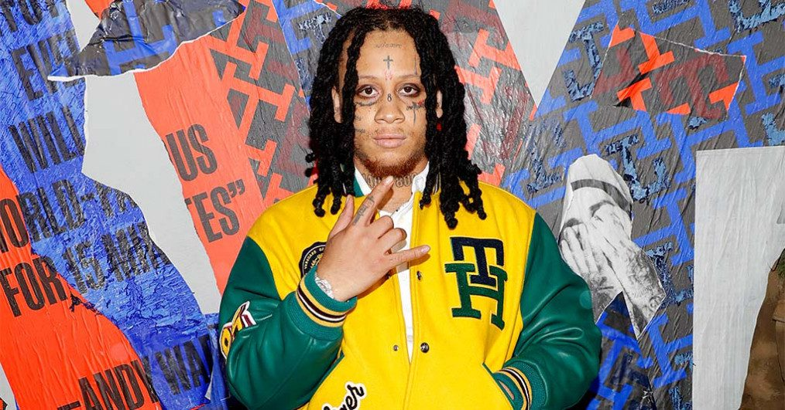
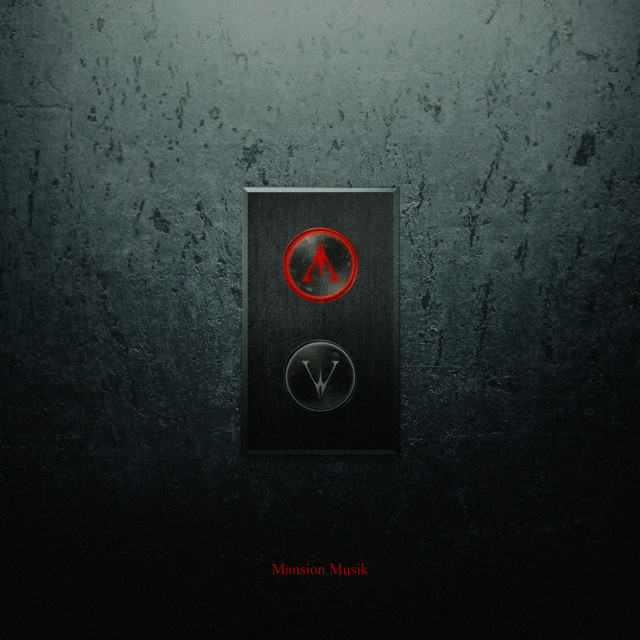
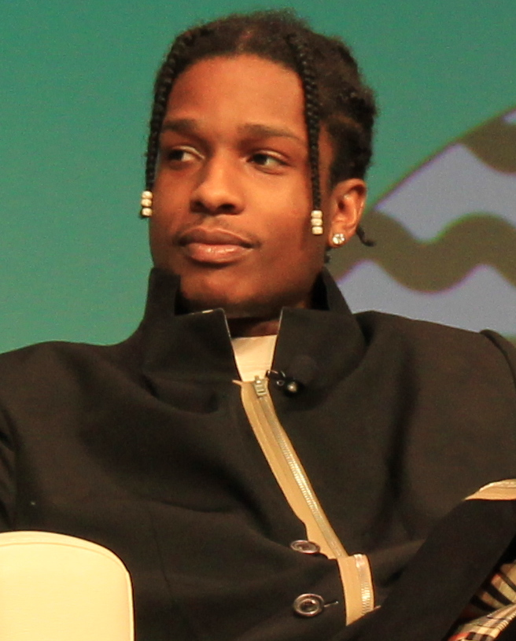
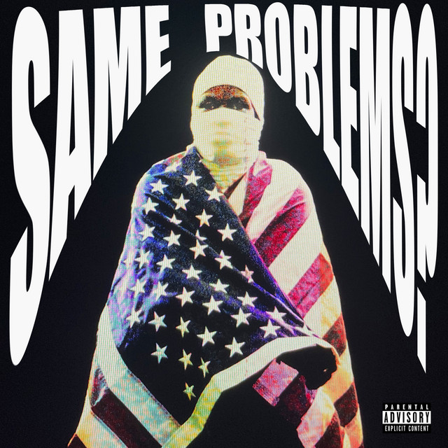
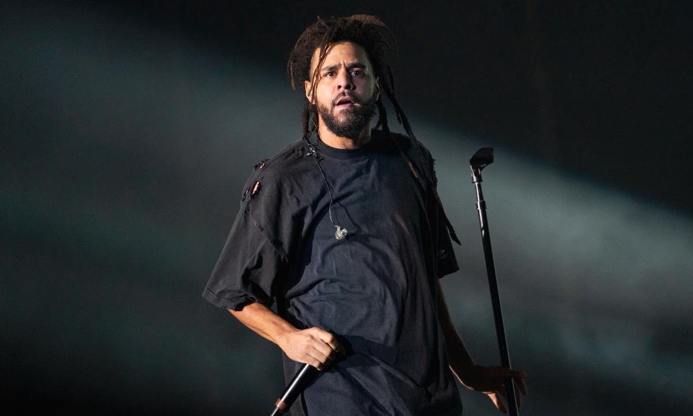
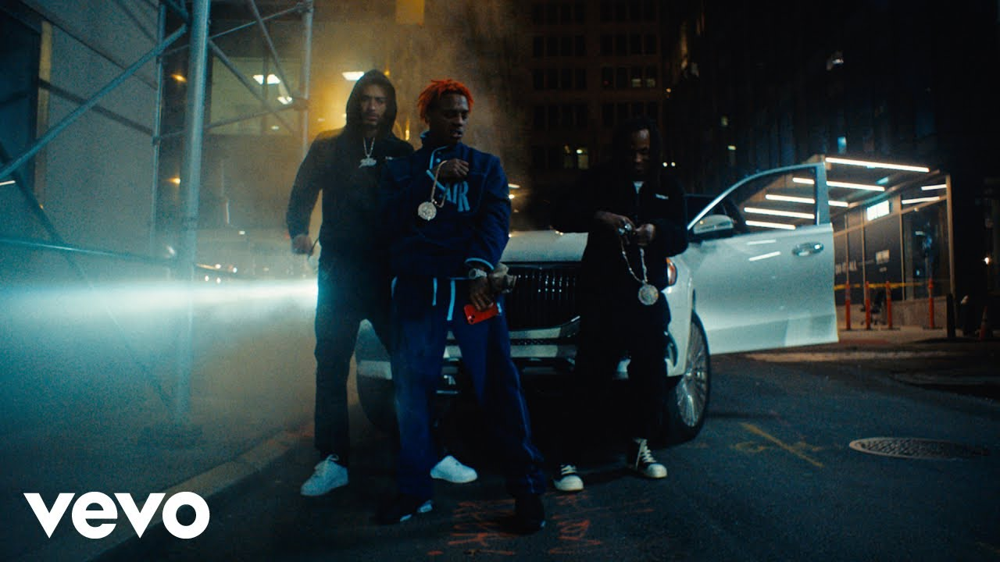
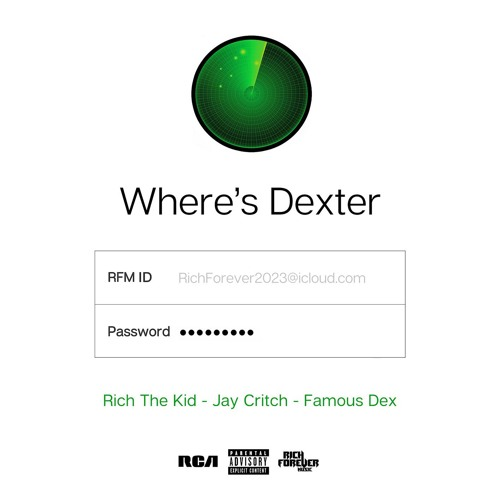

20.01.2023 Global Rap Yeni Çıkanlar Blog
Trippie Redd-MANSION MUSIK (Album)
2 yıllık albüm sessizliğini bozan Trippie Redd'e bu albümde Chief Keef,Future,Lil Baby, Juice WRLD(rip),Travis Scott,
Lil Durk, Nardo Wick, BIG30, LUCKI, Rich the Kid, Summrs, Fijimacintosh, Rylo Rodriguez, Ski Mask the Slump God, G Herbo, Chief Keef, Rob49, DaBaby, Lil B ve yakın zamanda tahliye
edilen Kodak Black eşlik ediyor.
25 şarkıdan oluşan bu albüm, alışılmadık altyapıları ve düet listesiyle fazlasıyla dikkat çekmeyi başardı.
Drill müziğin öncülerinden olan Chief Keef'i albümde hem prodüktör hem de konuk sanatçı olarak görüyoruz.
23 yaşındaki Ohio'lu sanatçı genç yaşına rağmen yayınladığı albüm sayısının fazlalığıyla dikkat çekiyor.
 
A$AP Rocky-Same Problems? (Single)
Uzun bir aradan sonra sessizliğini 2022 yılında bozan A$AP Rocky bu kez karşımıza duygusal bir şarkıyla çıkıyor.
Şarkıda adından da anlaşılacağı gibi geçmişteki ve şimdiki sorunlardan bahsediyor.
Back-vokalinde Lil Yachty desteklediği şarkının prodüktörlüğünü de A$AP Rocky'nin kendisinin üstlendiğini görüyoruz.
Ayrıca şarkının A$AP Mob'un kurucu üyesi olan A$AP Yams'in vefatının 8.yıldönümünde yayınlandı.
 
J.Cole-procrastination (broke) (Single)
J.Cole'un 2023 yılındaki ilk çalışması özelliğini taşıyan "procrastination (broke)" bunun yanında daha farklı detaylardan da oluşuyor.
Şarkıyı Spotify'dan bulmaya çalışın. J.Cole'un Spotify'da böyle bir parça yayınlamadığını göreceksiniz. Bunun sebebi aslında şarkının yapılış hikayesine dayanıyor.
Parçanın artwork'ünde J.Cole ve şarkının prodüktörü bvtman arasındaki mesajlaşmadan bir kesit görüyoruz.
J.Cole'un anlattığına göre çok da iyi olmayan bir günde ilham bulmak için internette takılırken YouTube'da J.Cole tipi altyapılar araması yapıyor.
Karşısına çıkan ilk altyapıya sözleri yazdıktan sonra şarkıyı bvtman'e yollayan J.Cole, bu parçanın bvtman ve onun gibi olan her prodüktöre teşekkür anlamında armağan ediyor.
Bu yüzden şarkı bvtman'in YouTube hesabında yayınlanıyor.
 .jpg)
Rich The Kid – Where’s Dexter ft. Famous Dex & Jay Critch (Single)
Rich the Kid, yeni senede Yung Q ve Trippie Redd ile yaptıkları işbirliklerinin ardından bu sefer
yanında Famous Dex ve Jay Critch gayet güzel bir işle karşımıza çıkıyor.
Şarkının prodüktörlüğünde Cassius Clay'i görüyoruz.
Liriklerde genel olarak para ve kadınlardan bahsediliyor.
Famous Dex için de uzun bir aranın ardınan müzik piyasasına geri döndüğünü söyleyebiliriz.
 